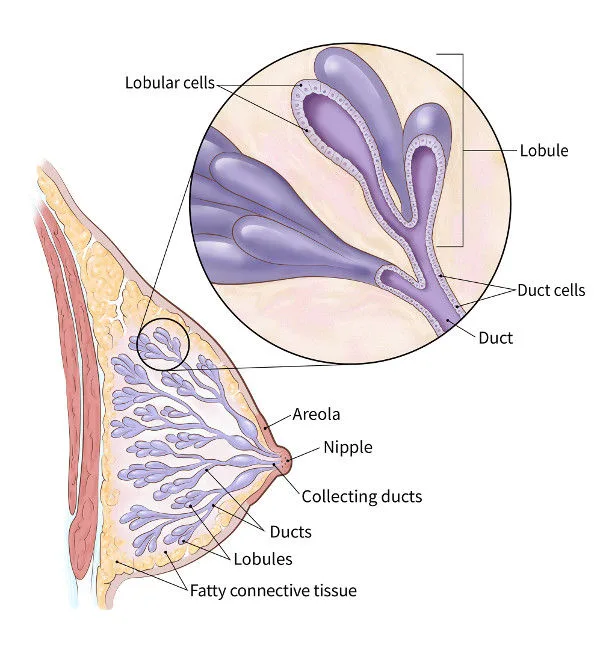
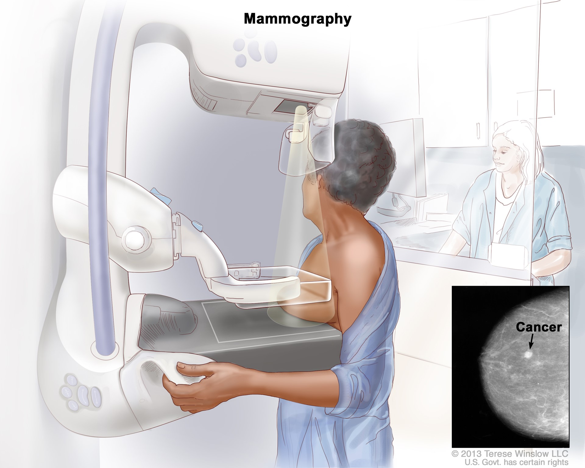
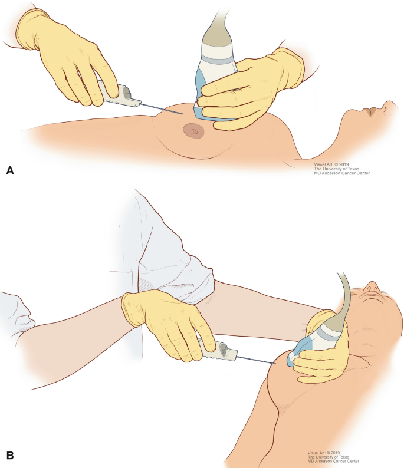
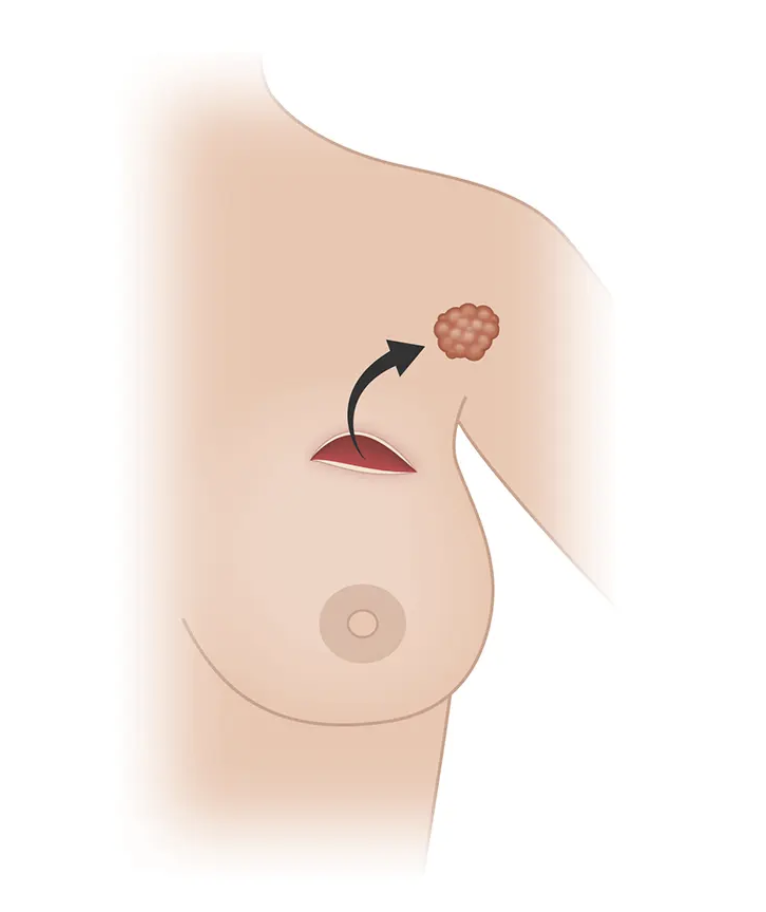
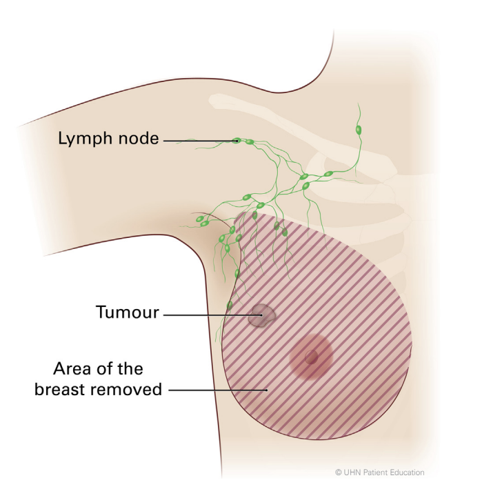
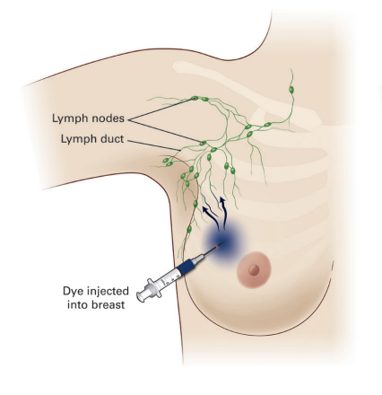

Breast cancer caused 685 000 deaths globally in 2020.
Roughly half of all breast cancers occur in women with no specific risk factors other than sex and age.
Breast cancer occurs in every country in the world.
Approximately 0.5–1% of breast cancers occur in men
What is breast cancer?
Breast cancer is a disease in which cells in the breast grow out of control. It can occur in both men and women, although it's much more common in women. Breast cancer usually starts in the cells that line the ducts (tubes that carry milk to the nipple) or the lobules (glands that produce milk).

Cancer cells can grow and spread to other parts of the body through the lymphatic system or bloodstream. When breast cancer spreads beyond the breast and nearby lymph nodes to other organs like the bones, liver, lungs, or brain, it's called metastatic breast cancer..
Symptoms of Breast Cancer
The symptoms of breast cancer can vary from person to person, and some individuals may not experience any symptoms at all, especially in the early stages. However, common signs and symptoms of breast cancer may include:
A lump or mass in the breast or underarm area.
Swelling, thickening, or distortion of breast tissue.
Changes in the size, shape, or appearance of the breast.
rritation or dimpling of breast skin.
Changes in the skin texture, such as redness, scaliness, or ridges.
Nipple changes, such as inversion (turning inward), discharge (other than breast milk), or a nipple that appears flattened or pulled inward.
Who are at risk?
Several factors may increase the risk of developing breast cancer. These risk factors can be categorized into non-modifiable and modifiable factors:
Non-modifiable risk factors:
Gender: Breast cancer is much more common in women than men.
Age: The risk of breast cancer increases with age, with the majority of cases diagnosed in women over 50.
Personal history of breast cancer or certain non-cancerous breast conditions, such as atypical hyperplasia or lobular carcinoma in situ (LCIS).
Previous radiation therapy: Previous radiation therapy to the chest area, particularly during childhood or adolescence, increases the risk of developing breast cancer later in life.
Reproductive history: Starting menstrual periods before age 12 and starting menopause after age 55 expose women to hormones longer, raising their risk of getting breast cancer.
Modifiable risk factors:
Lifestyle factors: Obesity, excessive alcohol consumption, a diet high in saturated fats, and physical inactivity may increase the risk of breast cancer.
Hormone therapy: Long-term use of combined hormone therapy (estrogen plus progestin) after menopause may increase the risk.
Reproductive history: Having the first pregnancy after age 30, not breastfeeding, and never having a full-term pregnancy can raise breast cancer risk
Become familiar with your breasts through breast self-exam for breast awareness. You may choose to become familiar with your breasts by occasionally inspecting them during a breast self-exam for breast awareness. If there is a new change, a lump or something not typical in your breasts, report it to a healthcare professional right away.
Diagnosis
Breast cancer diagnosis often begins with an exam and a discussion of your symptoms. Imaging tests can look at the breast tissue for anything that's not typical. To confirm whether there is cancer or not, a sample of tissue is removed from the breast for testing.
Some imaging and tests include;

Mammogram
Breast MRI

Core needle biopsy
Types of Breast Cancer
There are various types of breast cancer, and they can be categorized based on whether they are invasive (spreading into surrounding breast tissue) or non-invasive (confined to the ducts or lobules).
The most common kinds of breast cancer are;
Invasive ductal carcinoma: The cancer cells begin in the ducts and then grow outside the ducts into other parts of the breast tissue. Invasive cancer cells can also spread, or metastasize, to other parts of the body.
Invasive lobular carcinoma: Cancer cells begin in the lobules and then spread from the lobules to the breast tissues that are close by. These invasive cancer cells can also spread to other parts of the body.
Stages of Breast Cancer
Stage 0 - Ductal carcinoma in situ (DCIS): Abnormal cells are confined to the ducts or lobules and haven't invaded nearby tissues.
Stage I: At this stage, the tumor is small and hasn't spread beyond the breast. It may be less than 2 centimeters (about 0.8 inches) in size.
Stage II: The tumor is larger, between 2-5 centimeters, and may or may not have spread to nearby lymph nodes.
Stage III: The cancer is locally advanced, meaning it has spread extensively within the breast or nearby lymph nodes, and may have invaded nearby tissues.
Stage IV: Metastatic breast cancer, where cancer cells have spread to distant organs such as the bones, liver, lungs, or brain.
Each stage has specific treatment approaches, and the prognosis varies depending on the stage, type of breast cancer, and other individual factors.
Management and Treatment
Treatment for breast cancer depends on several factors, including the stage of the cancer, the type of breast cancer, the person's overall health, and their preferences. Here are some common treatment options:
Breast cancer surgery;

Breast conservative surgery (Lumpectomy)

Mastectomy

Sentinel lymph node biopsy
Radiation therapy: Radiation therapy uses high-energy beams to target and destroy cancer cells. It's often used after surgery to kill any remaining cancer cells and reduce the risk of recurrence.
Chemotherapy: Chemotherapy uses drugs to kill cancer cells or stop them from growing. It may be given before surgery (neoadjuvant chemotherapy) to shrink the tumor or after surgery (adjuvant chemotherapy) to kill any remaining cancer cells.
Hormone therapy: Hormone therapy is used to treat hormone receptor-positive breast cancer, which grows in response to hormones like estrogen or progesterone. It blocks the effects of hormones or lowers hormone levels in the body.
Targeted therapy: Targeted therapy uses medicines that attack specific chemicals in the cancer cells. By blocking these chemicals, targeted treatments can cause cancer cells to die.
Immunotherapy: Immunotherapy drugs help the body's immune system recognize and attack cancer cells. They may be used in certain cases of breast cancer, particularly triple-negative breast cancer..
Adjuvant therapy: Adjuvant therapy refers to treatments given after surgery to reduce the risk of cancer recurrence. It may include radiation therapy, chemotherapy, hormone therapy, or targeted therapy.
Palliative care: Palliative care focuses on providing relief from symptoms and improving the quality of life for individuals with advanced or metastatic breast cancer. It addresses physical, emotional, and spiritual needs.
Prevention of breast cancer
While there's no guaranteed way to prevent breast cancer, there are several strategies that may help reduce the risk:
Diet and lifestyle
Regular exercise and eating a healthy, balanced diet are recommended for all women, as they can help prevent many health conditions, including heart disease, diabetes and many forms of cancer.
Studies have looked at the link between breast cancer and diet, and although there are no definite conclusions, there are benefits for women who:
Maintain a healthy weight: Being overweight or obese, especially after menopause, can increase the risk of breast cancer. Aim to maintain a healthy weight through a balanced diet and regular exercise.
Stay physically active: Engage in regular physical activity, such as brisk walking, jogging, swimming, or cycling, for at least 30 minutes a day most days of the week. Exercise can help lower the risk of breast cancer.
Limit alcohol consumption: Alcohol consumption has been linked to an increased risk of breast cancer. Limit alcohol intake to no more than one drink per day, or consider avoiding alcohol altogether.
Don't smoke: Smoking is associated with a higher risk of breast cancer, particularly in premenopausal women. If you smoke, quit smoking, and avoid exposure to secondhand smoke.
Breastfeeding
Studies have shown women who breastfeed are statistically less likely to develop breast cancer than those who do not.
The reasons are not fully understood, but it could be because women do not ovulate as regularly while they're breastfeeding and oestrogen levels remain stable.
Be vigilant with screening
Regular breast cancer screening, including mammograms, clinical breast exams, and breast self-exams, can help detect breast cancer at an early stage when it's most treatable. Follow recommended screening guidelines based on your age, family history, and other risk factors.
Know your family history
A family history of breast cancer, particularly in first-degree relatives (such as mother, sister, or daughter), may increase your risk. Be aware of your family history and discuss it with your healthcare provider.

.svg)